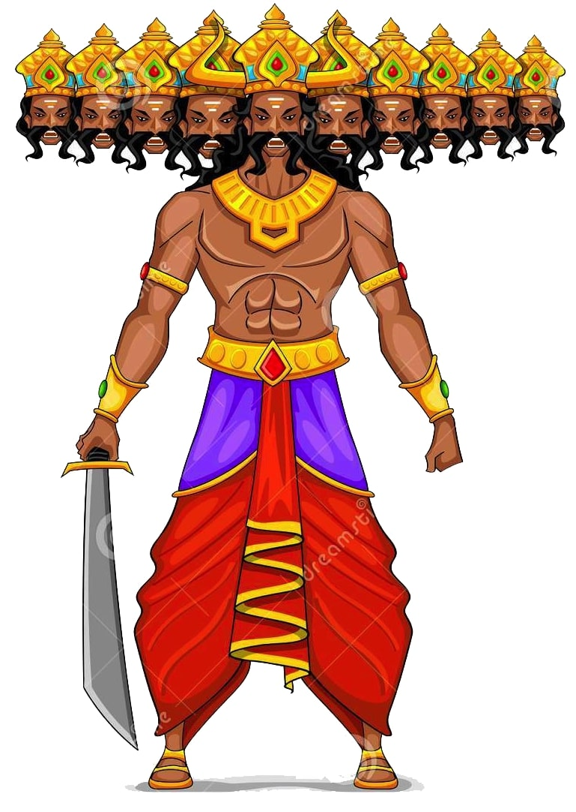
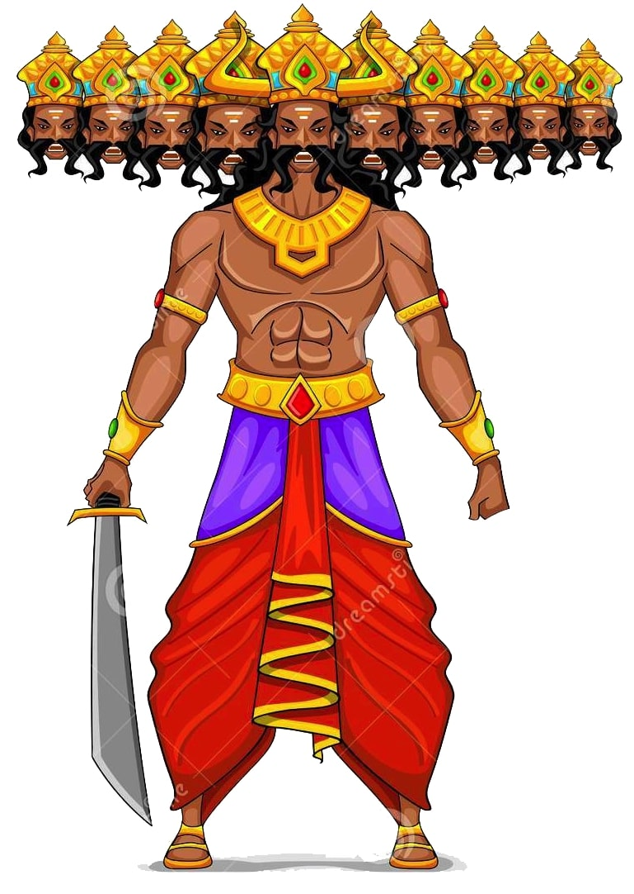

THE HINDU EPIC : RAMAYANA
 

The epic, traditionally ascribed to the Maharishi Valmiki, narrates the life of Rama, prince of the legendary kingdom of Kosala.
The original five books of an oral epic of local northern significance dealing with a hero and his exile, the abduction of his wife by a rival king and her rescue became conflated into seven books in which the hero Rama became an avatar of the god Vishnu, the scene shifted to encompass the whole of India, and the struggle to recover his wife became a metaphor for the final triumph of the righteous.
The devastated Dasharatha has no choice and Rama prepares to leave for exile. Sita and Lakshmana will not leave his side however and follow him into the forest. Dasharatha is the King of Ayodhya and has three wives and four sons, Rama, Lakshmana, Bharata and Shatrughana. Rama is the ideal and perfect son, and grows up with his brothers. When he comes of age, he marries Sita, the princess of a nearby kingdom. However, Bharata's mother is Kaikeyi, who resents Rama being the crown prince. She calls up a debt that Dasharatha owes her and asks for Rama to be exiled for fourteen years and her son Bharata be made crown prince instead.While in the forest, Surphanaka, a female rakshasi (demoness) becomes enamored of Rama and is wounded by Lakshmana while trying to kill Sita.
She flees to her brother Khara and asks him to avenge her. However, Khara and his army are defeated by Rama and Lakshmana, and only one member of their entire army survives. This lone soldier flees to the island kingdom of Lanka and begs Surphanaka's brother, the mighty king Ravana to avenge them. Ravana has heard of Sita's beauty and he decides to abduct her. Using trickery and magic, he manages to lure Rama and Lakshmana away from Sita and kidnaps her, taking her away to Lanka.
ramayana
Ravana kidnaps Sita and slays Jatayu.
The epic's poetic stature and marvellous story means that the story of Rama has been constantly retold by some of India's greatest writers both in Sanskrit and regional languages. It is one of the staples of various dramatic traditions, in court drama, dance-dramas, and in shadow-puppet theatres. In northern India, the annual Ram-lila or 'Rama-play' is performed at the autumn festival of Dassehra to celebrate with Rama and Sita the eventual triumph of light over darkness.
A hugely popular television series, 'Ramayan', was aired in India 1987-1988, drawing over 100 million viewers to become 'the world's most viewed mythological serial'. Dubbed 'Ramayan' fever by India Today magazine, it was reported that India came to a virtual standstill as so many people who could gain access to a television stopped whatever they were doing to watch the small screen adventures of Rama. From January 2008, a new big-budget primetime series of the Ramayana has been appearing on television screens across India.
Verses:
24000
Original Language:
Sanskrit
Genre:
Epic Poetry
Origins
Click here to see the Characters of the Ramayana
A brief summary of the Ramayana
Rama and Lakshmana travel far and wide searching for Sita but to no avail. Finally, they come upon a band of vanaras or monkey-men who pledge to help him. One of the might warriors of the vanaras, Hanuman, becomes Rama's staunch devotee. The vanaras seek out traces of Sita and find she has been taken to Lanka. Hanuman flies to Lanka and confirms she is imprisoned there. He contacts Sita and informs her of Rama's whereabouts, promising that they will be back to rescue her.
Before returning to the mainland, Hanuman sets fire to the whole city of Lanka.
Rama, Lakshmana and the vanar army build a causeway from the tip of India to Lanka. They travel to Lanka, where an epic battle follows between the armies. Ravana is finally killed by Rama, and Sita is freed. They return to Ayodhya, where Bharata returns the crown to Rama The importance of the Ramayana in Indian culture
Made By: Shivangi Jha
Class: IX-E
Roll No.: 38